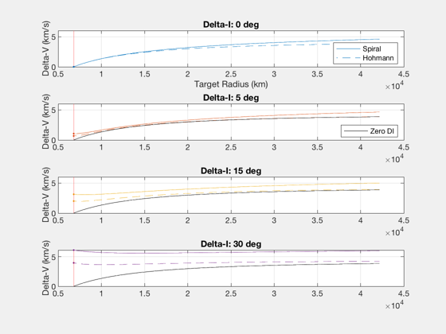
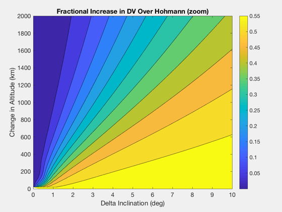
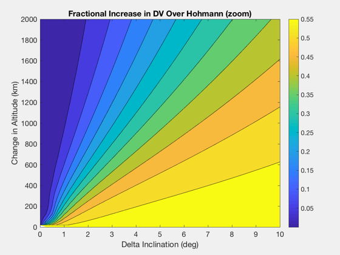

Compare low-thrust spiral to Hohmann with inclination change
Create a contour map showing the variation in delta-V with both altitude and inclination change.
Contents
See also
LTPlaneChange, OrbMnvrInclination, OptDIH
%-------------------------------------------------------------------------- % Copyright (c) 2018,2019 Princeton Satellite Systems, Inc. % All rights reserved. %-------------------------------------------------------------------------- r0 = 6800; r1 = linspace(r0,42200); dI = [0 5 15 30]*pi/180; nL = length(dI); dVopt = zeros(nL,length(r1)); dVlow = zeros(nL,length(r1)); for k = 1:nL dVlow(k,:) = LTPlaneChange( r0, r1, dI(k) ); % note: OptDIH can take eccentricity into account for j = 1:length(r1) if r0==r1(j) deltaV = OrbMnvrInclination(VOrbit(r0),0,0,dI(k)); dVopt(k,j) = deltaV.total; else dVopt(k,j) = OptDIH( 0, r0, 0, r1(j), dI(k) ); % DVHohInc end end end
Line Plots
NewFig('Spiral Comparison'); colors = get(gca,'colororder'); for k = 1:nL subplot(nL,1,k) l1(k) = plot(r1,dVlow(k,:),'color',colors(k,:),'linestyle','-'); hold on plot(r1(1),dVlow(k,1),'.','color',colors(k,:)); l2(k) = plot(r1,dVopt(k,:),'color',colors(k,:),'linestyle','--'); plot(r1(1),dVopt(k,1),'.','color',colors(k,:)); if k > 1 l3(k) = plot(r1,dVopt(1,:),'k-'); end if k == 1 xlabel('Target Radius (km)') end yy = axis; plot([r0 r0],[0 6],'r') grid on ylabel('Delta-V (km/s)') title(sprintf('Delta-I: %g deg',dI(k)*180/pi)); end subplot(nL,1,1) legend([l1(1) l2(1)],'Spiral','Hohmann','location','southeast') subplot(nL,1,2) legend(l3(2),'Zero DI','location','southeast')
Contour map
dHs = [linspace(0,2000,101) linspace(2020,42200-r0)]; nH = length(dHs); dIs = linspace(0,30,121)*pi/180; nI = length(dIs); dVlts = zeros(nH,nI); dVhns = zeros(nH,nI); dVopt = zeros(nH,nI); for k = 1:nH dVlts(k,:) = LTPlaneChange( r0, r0+dHs(k), dIs ); for j = 1:length(dIs) if dHs(k)==0 deltaV = OrbMnvrInclination(VOrbit(r0),0,0,dIs(k)); dVopt(k,j) = deltaV.total; else dVhns(k,j) = OptDIH( 0, r0, 0, r0+dHs(k), dIs(j) ); end end end NewFig('Contours') fracIncs = dVlts./dVhns - 1; contourf(dIs*180/pi,dHs,fracIncs) colorbar xlabel('Delta Inclination (deg)') ylabel('Change in Altitude (km)') title('Fractional Increase in DV Over Hohmann') NewFig('Contours - Zoom') contourf(dIs(1:41)*180/pi,dHs(1:101),fracIncs(1:101,1:41)) colorbar xlabel('Delta Inclination (deg)') ylabel('Change in Altitude (km)') title('Fractional Increase in DV Over Hohmann (zoom)') %--------------------------------------
 
